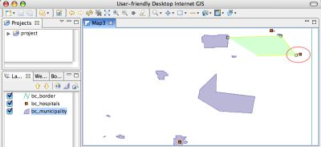
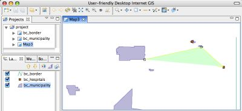
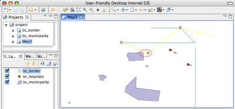
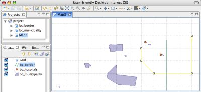
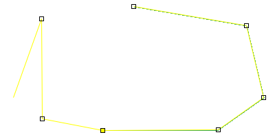
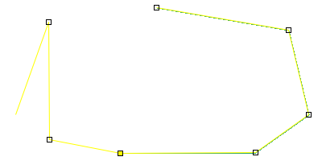

Diese Werkzeuge dienen dem Anlegen neuer Features. Viele von ihnen können auch zum Bearbeiten bestehender Geometrien genutzt werden, wenn die erweiterten Bearbeitungsfunktionen aktiviert sind. So läßt sich eine komplexe Bearbeitung komfortabler durchführen, da seltener zwischen verschiedenen Werkzeugen umgeschaltet werden muß.
Zu Kategorie dieser Werkzeuge gehören:
Diese Werkzeug erlaubt es, neue Polygone anzulegen. Wählen Sie dazu einen Polygonkartenlayer im Legendenfenster und klicken Sie auf den Ort für den ersten Eckpunkt. Durch weitere Klicks fügen Sie weitere Eckpunkte hinzu.
Hinweis: Derart erstellte Polygone werden nur ausgefüllt, wenn dies durch die Voreinstellung "Ausgewälte Polygone füllen" in den Leistungsparemetern für Bearbeitungswerkzeuge so festgelegt wurde.

Normalerweise ist das Einrasten ausgeschaltet. Es kann jedoch auf Wunsch bei der Polygonerstellung genutzt werden.
Polygonerstellung mit Einrasten im aktuellen Kartenlayer: Beachten Sie, daß der Eckpunkt nicht zum Krankenhauspunkt eingerastet ist (rot hervorgehoben), da sich dieser auf einem anderen Kartenlayer befindet.

Polygonerzeugung mit Einrasten auf alle Kartenlayer: Mit dieser Option passierte ein Einrasten auf ein Krankenhaus im anderen Kartenlayer.

Polygonerzeugung mit Einrasten auf ein Gitter: Das Gitter wird nur angezeigt, wenn der Gitterkartenlayer zur Karte hinzugefügt wurde: Dies geschieht im Menü über "Layer > Netz".

Im erweiterte Bearbeitungsmodus verfügen Sie bei Auswahl des Polygonerzeugungswerkzeugs über fast alle Funktionen wie beim Geometriebearbeitungswerkzeug, mit der Ausnahme, daß nur Polygone bearbeitet werden können. Folgende Funktionalität wird bereitgestellt:


Normalerweise ist das Einrasten ausgeschaltet. Es kann jedoch auf Wunsch bei der Geometrieerstellung genutzt werden.
Linienerzeugung mit Einrasten im aktuellen Kartenlayer: Beachten Sie, daß der Eckpunkt nicht zur Gemeinde eingerastet ist (rot hervorgehoben), da sich diese auf einem anderen Kartenlayer befindet.

Linienerzeugung mit Einrasten auf alle Kartenlayer: Mit dieser Option passierte ein Einrasten auch auf Features in anderen Kartenlayern.

Linienerzeugung mit Einrasten auf ein Gitter: Das Gitter wird nur angezeigt, wenn der Gitterkartenlayer zur Karte hinzugefügt wurde: Dies geschieht im Menü über "Layer > Netz".

Auch das Linienbearbeitungswerkzeug besitzt erweiterte Bearbeitungsfunktionen, welche alle Funktionen wie beim Geometriebearbeitungswerkzeug bereitstellen, mit der Ausnahme, daß nur Linien bearbeitet werden können. Folgende Funktionalität wird bereitgestellt:
 

Dieses Werkzeug erlaubt das Setzen neuer Punktfeatures. Wählen Sie dazu den entsprechenden Kartenlayer aus und klicken Sie an die Stelle, an die der neue Punkt gesetzt werden soll.
Normalerweise ist das Einrasten ausgeschaltet. Es kann jedoch auf Wunsch bei der Punkterstellung genutzt werden. Einrasten geschieht je nach Voreinstellung entweder auf Objekte des aktuellen Kartenlayers, auf Objekte beliebiger Layer oder auf ein Raster. Das Gitter wird nur angezeigt, wenn der Gitterkartenlayer zur Karte hinzugefügt wurde: Dies geschieht im Menü über "Layer > Netz".
Auch das Linienbearbeitungswerkzeug besitzt erweiterte Bearbeitungsfunktionen, welche alle Funktionen wie beim Geometriebearbeitungswerkzeug bereitstellen, mit der Ausnahme, daß nur Punkte bearbeitet werden können. Folgende Funktionalität kann genutzt werden:
Das Geometriezeichenwerkzeug erlaubt es, Linien, Polyone und Löcher im Freihand-Zeichenstil anzulegen. Das Werkzeugt versucht selbstständig herauszufinden, welche Art Geometrie erzeugt wird, indem es den Featuretyp des Kartenlayers untersucht. In Polygon- und Linienlayern werden Polygone bzw. Linien erzeugt. Ist der Featuretyp "Geometrie" (und kann also Polygone und Linien enthalten), so zeichnet dieses Werkzeug Linien, es sei denn, Anfangs- und Endpunkt sind identisch und die Geometrie damit geschlossen; in diesem Fall wird ein Polygon erzeugt.

Das Werkzeug kann auch Löcher in bestehenden Polygonen erzeugen. Gehen Sie dazu wie folgt vor:
1. Wählen Sie die zu bearbeitende Geometrie. Dazu müssen die erweiterten Bearbeitungsfunktionen aktiv sein.
2. Zeichnen Sie nun das Loch in das Polygon.
Wie auch bei der Linienerstellung, so kann auch dieses Werkzeug bestehende Linien verlängern:
1. Wählen Sie die zu bearbeitende Geometrie. Dazu müssen die erweiterten Bearbeitungsfunktionen aktiv sein.
2. Klicken Sie auf einen der Endpunkte.
3. Zeichnen Sie von dort wie gewohnt eine Linie.
Achtung: Die Erweiterung muß an der existierenden Linie beginnen. Eine Linie, die lediglich an einer bestehenden Linie endet, wird als neue Linie angelegt und nicht als Verlängerung der bestehenden.

Das Rechteckwerkzeug ist eines der einfachsten Werkzeuge. Man zeichnet damit einfach ein Rechteck, indem man es mit der Maus aufzieht. Hat dieses die gewünschte Größe, wird die Maustaste losgelassen. Dies erzeugt ein Feature, dessen Geometrie ein Rechteck mit den Seiten parallel zu den Koordinatenachsen ist.
Hinweis 1: Rechtecke können entweder Polygone oder Linien sein.
Hinweis 2: Dieses Werkzeug hat keine erweiterten Funktionen.

Das Ellipsenwerkzeug ist eines der einfachsten Werkzeuge. Ziehen Sie einfach mit der Maus eine Ellipse auf und lassen Sie die Maustaste los, wenn diese die gewünschte Größe besitzt. Es wird dann ein Feature mit der Ellipse als Geometrie erzeugt.
Hinweis 1: Ellipsen können entweder Polygone oder Linien sein.
Hinweis 2: Für das Ellipsenwerkzeug existieren keine erweiterten Funktionen.
Edit Mode]
{kind=link}
{kind=link}
{kind=link}
{kind=link}